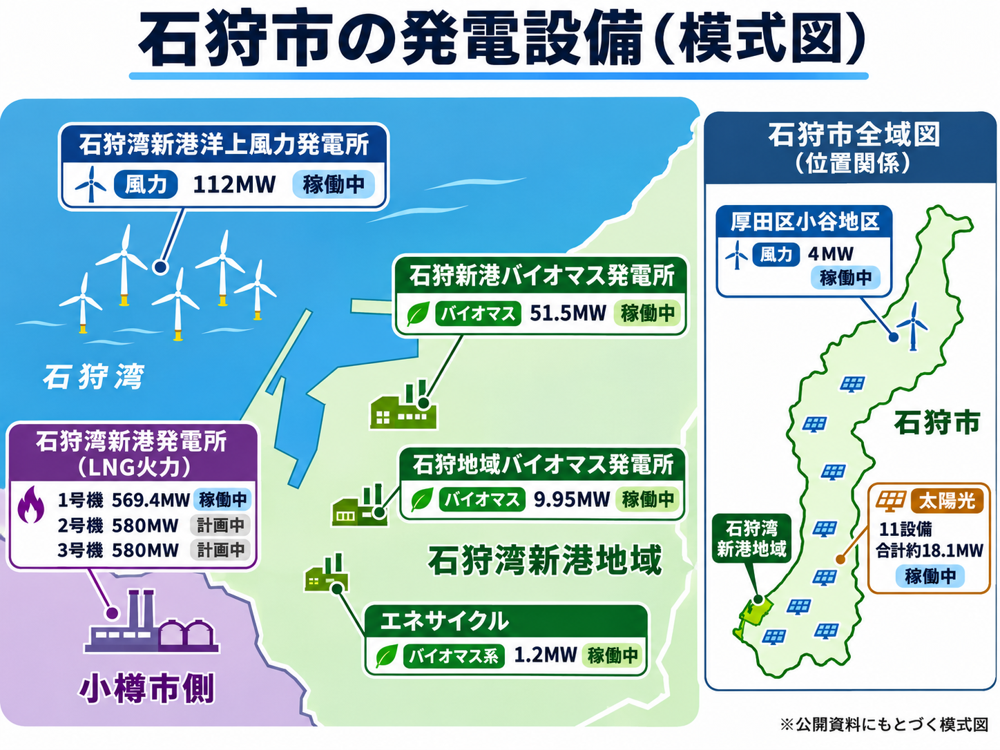

北海道・石狩市
第6章 石狩の再生可能エネルギーと電力供給は、どこまで整備されているのか
6.1 石狩湾新港地域には、どのような発電設備があるのか
石狩湾新港地域には、風力、太陽光、バイオマスなど、さまざまな再生可能エネルギーの発電設備が集まっています。石狩市が2026年4月に公開した「環境白書2025」によると、市内や周辺の再エネ発電能力は約238MWに達しています。電源別では風力が157MWと最も大きく、太陽光が28MW、未利用木質バイオマスが53MWです。（石狩市「環境白書2025」、2026年）
| 電源 | 稼働済み設備容量 |
|---|---|
| 太陽光 | 28MW |
| 風力 | 157MW |
| バイオマス（未利用木質） | 53MW |
| 合計 | 238MW |
この数値は、2026年1月末時点の事業計画認定情報を基にした集計です。環境白書では「市内や周辺での再エネ発電能力」と説明されているため、個別設備の所在地を確認せずに、238MWのすべてが石狩市の行政区域内にあると判断することはできません。また、発電所の設備容量を合計した値であり、238MWの電力が一年を通じて絶えず供給されているという意味でもありません。
この地域の再エネ設備を代表するのが、石狩湾新港洋上風力発電所です。合同会社グリーンパワー石狩が事業主体となり、2024年1月1日に商業運転を開始しました。発電設備は1基8MWの風車14基からなり、設備容量は112MW、北海道電力ネットワークへの系統接続容量は99.99MWです。さらに、180MWhの蓄電池を併設しています。（JERA「『石狩湾新港洋上風力発電所』の商業運転開始について」、2024年）
設備容量112MWと系統接続容量99.99MWには、異なる意味があります。112MWは14基の風車の定格出力を合計した数値であり、99.99MWは電力系統へ接続する容量です。蓄電池の180MWhは蓄えられる電力量を表しており、風の強さによって変化する発電出力を調整するために利用されます。
発電所でつくられた電力は、蓄電池を備えたプロジェクト変電所を経由し、北海道電力ネットワークの西札幌変電所へ送られます。発電事業者は北海道電力ネットワークへの全量供給を公表していますが、電力が送配電網へ送られることは、石狩のデータセンターがその電源を利用できないことを意味しません。後述するKCCSのデータセンターでは、洋上風力由来の電力を調達する事業が実際に成立しています。
洋上風力に加えて、石狩湾新港地域ではバイオマス発電所の整備も進んできました。バイオマス発電は、木質チップなどの燃料を使って発電する方式で、日射や風況によって出力が大きく変化する太陽光・風力とは異なる運転特性を持っています。石狩市の環境白書には、出力51.5MWの石狩新港バイオマス発電所、1.2MWのエネサイクルの設備、当時は運転開始前だった9.95MWの石狩地域バイオマス発電所が掲載されています。
石狩新港バイオマス発電所は、石狩バイオエナジー合同会社による発電出力51.5MWの施設で、2023年3月に商業運転を開始しました。しかし、2024年7月に燃料受入設備で爆発事故が発生し、運転を停止しています。その後、設備の復旧と再発防止策が進められ、奥村組は2026年5月の決算説明会資料で、同年4月から商業運転を再開したと公表しました。（奥村組「2026年3月期決算説明会資料」、2026年）
この経緯から分かるのは、発電所の設備容量が変わらなくても、実際に供給できる電力量は運転状況によって大きく変わるということです。51.5MWという定格出力だけを使って、事故による長期停止を含む期間の年間発電量を推定することはできません。2026年4月の運転再開は確認できますが、その後の年間発電実績については、今回確認した資料から確定できませんでした。
もう一つの石狩地域バイオマス発電所は、丸紅クリーンパワーと大成建設が共同出資する石狩地域バイオマス発電株式会社の事業です。石狩市新港中央2丁目に建設され、2026年4月に商業運転を開始しました。発電出力は9.95MW、燃料には国産の木質チップを使用し、年間約8,000万kWh、すなわち約80GWhの発電を見込んでいます。（丸紅クリーンパワー「石狩地域バイオマス発電所の運転開始」、2026年）
年間約80GWhは事業者が公表した推定発電量であり、運転開始後に測定された年間実績ではありません。石狩市の環境白書では、2026年1月時点で同施設を運転開始前として掲載しています。そのため、同白書の稼働済みバイオマス53MWに、2026年4月から稼働した9.95MWを含めて考えることはできません。53MWは既存の51.5MWと1.2MWの設備を含む規模と整合しており、異なる時点の設備容量を無条件に合算することは避ける必要があります。
なお、環境白書に掲載されているエネサイクル株式会社の設備は1.2MWで、2026年1月時点の一覧では稼働中とされています。石狩のバイオマス発電は、51.5MWと9.95MWの大型設備だけで構成されているわけではなく、出力規模の異なる設備が存在しています。
陸上風力についても、石狩市では以前から発電事業が行われてきました。厚田区小谷地区には、2014年12月から稼働する定格出力2MWの風車が2基あり、合計4MWの発電能力を備えています。運営する株式会社厚田市民風力発電は売電益の一部を石狩市へ寄付しており、市はその資金を環境まちづくり基金へ積み立て、環境関連事業の財源として活用しています。（石狩市「環境白書2025」、2026年）
この事例では、発電した電力の利用先だけでなく、発電事業から生じる収益が地域へ還元されている点にも特徴があります。また、新港南地区の風力発電設備「かぜるちゃん」については、市内の学校など23の公共施設で電力を利用する取り組みが進められてきました。石狩市は2024年に関係事業者と協定を締結し、地域の風力発電を公共施設の電力調達へ結び付けています。
太陽光発電については、石狩市の環境白書に、2026年1月時点で稼働中とされる1MW以上の設備11件が掲載されています。出力を合計すると18,108.2kW、約18.1MWです。事業者にはリコーリース、八重洲インフラファンド、地域電力、サンユー、CLEAN ENERGIES TARIFA、北ガスジェネックスなどが含まれ、複数の企業によって太陽光発電設備が整備されてきたことが分かります。
| 事業者 | 設備出力 |
|---|---|
| リコーリース① | 1,986.0kW |
| 八重洲インフラファンド | 1,995.0kW |
| 地域電力 | 1,800.0kW |
| サンユー | 1,260.0kW |
| CLEAN ENERGIES TARIFA① | 1,990.0kW |
| CLEAN ENERGIES TARIFA② | 1,778.0kW |
| リコーリース② | 1,225.0kW |
| 北ガスジェネックス | 1,000.0kW |
| 上里建設 | 1,665.0kW |
| 郵船商事 | 1,450.8kW |
| IMCソーラー | 1,958.4kW |
| 11設備合計 | 18,108.2kW |
この18.1MWは、環境白書が示す太陽光発電設備全体の28MWに含まれる一部であり、別の発電能力として加算するものではありません。また、これらの設備の存在だけでは、それぞれの発電電力が石狩市内のデータセンターへ供給されているとは判断できません。電力の販売先や供給契約については、発電設備の所在地とは別に確認する必要があります。
石狩湾新港地域の電力供給を考えるうえでは、再生可能エネルギー以外の大規模電源も欠かせません。北海道電力の石狩湾新港発電所は、小樽市銭函5丁目に所在するLNG火力発電所です。2019年2月に営業運転を開始した1号機の出力は569.4MWで、2号機580MWは2030年度、3号機580MWは2033年度の営業運転開始が予定されています。（北海道電力「石狩湾新港発電所の概要」）
北海道電力が公表する合計1,729.4MWには、将来の2号機・3号機が含まれています。2026年11月時点で営業運転しているのは1号機であり、将来計画を現行の発電能力として数えることはできません。LNG火力は再エネ238MWの集計にも含まれませんが、北海道の広域的な電力供給を支える電源として、石狩のデータセンターが置かれている電力環境を理解するために重要です。
| 発電設備 | 設備容量 | 公表された運転状況 |
|---|---|---|
| 石狩湾新港洋上風力 | 112MW | 2024年1月商業運転開始 |
| 石狩新港バイオマス | 51.5MW | 2026年4月商業運転再開 |
| 石狩地域バイオマス | 9.95MW | 2026年4月商業運転開始 |
| エネサイクル・バイオマス | 1.2MW | 2026年1月時点で稼働中 |
| 厚田区小谷地区の陸上風力 | 4MW | 2014年12月から稼働 |
| 市内1MW以上の太陽光11設備 | 約18.1MW | 2026年1月時点で稼働中 |
| 石狩湾新港LNG火力1号機 | 569.4MW | 2019年2月営業運転開始 |
| LNG火力2号機・3号機 | 各580MW | 2030年度・2033年度開始予定 |
ここまでの発電設備を見ると、石狩湾新港地域には発電規模の大きい電源と、地域内の需要に応じて利用できる分散型の電源が共存しています。風力や太陽光の発電量は天候によって変化し、バイオマス発電には燃料の確保や設備停止の影響があります。さらに、発電した電力がどこへ販売されるかは、事業者ごとの契約によって異なります。
石狩に多くの発電設備が集まったとしても、それだけでデータセンターの電力需要を地域内で賄えるわけではありません。発電所と需要家を結び付け、電力の供給経路と価格、需給調整の仕組みを整える必要があります。そのために石狩市が進めてきたのが、再エネ100％ゾーンの構想です。

6.2 石狩市のREゾーンは、何を目的に設けられたのか
石狩市が再生可能エネルギーの集積を進めてきた目的は、発電設備を増やすことだけではありません。地域でつくった電力を地域の企業が利用できるようにし、電力を大量に使う産業の立地へ結び付けることを目指してきました。その構想を具体化したのが、石狩湾新港地域に設けられた再エネ100％ゾーン、REゾーンです。
石狩市は2018年度、京セラコミュニケーションシステム（KCCS）、北海道電力、北海道ガスとともに「地産エネルギー活用マスタープラン」を策定しました。計画では、データセンターを中心とする電力需要を想定し、太陽光、風力、木質バイオマス、蓄電池を組み合わせて地域内へ電力を供給するモデルを検討しています。（石狩市「地産エネルギー活用マスタープラン」、2018年度）
当初のモデルでは、太陽光2MW、風力2MW、木質バイオマス0〜2MW、最大6MWhの蓄電池が想定されました。最初の需要家としてデータセンターを位置付け、その後、体育館やセンタービル、新たに立地する企業へ供給先を広げる計画です。これらは事業性や運用方法を調べるためのモデル値であり、当時すべての設備が完成していたことを示すものではありません。
風力や太陽光による電力を24時間稼働するデータセンターへ供給するためには、発電量と需要量の変動を調整する必要があります。そこで、マスタープランではAIを利用した発電量・電力需要の予測と、蓄電池の充放電を組み合わせるエネルギーマネジメントシステムを検討しました。地域の再エネをデータセンターで継続的に利用できれば、電力の脱炭素化と産業誘致を一体的に進めることができます。
2018年度に検討された供給方式は、バイオマス発電事業者を特定供給者とし、自営線などを利用して需要家へ電力を届ける「特定供給モデル」でした。その後、構想は対象区域と参加事業者を広げ、2022年には特定送配電事業による供給が検討されています。
石狩市が2022年9月に内閣府へ提出した資料では、REゾーンの面積は約100haとされています。位置図には、既存のさくらインターネット石狩データセンター、当時建設予定だったKCCSのデータセンター、石狩再エネデータセンター第1号の計画地、周辺の発電設備などが示されています。市は北海道電力、KCCS、住友商事と共同で、地域の再エネを特定送配電事業によって供給する計画を検討していました。（石狩市「地域マイクログリッドの構築における分散型エネルギーリソースとしての蓄電池活用について」、2022年）
特定供給と特定送配電事業は制度上の位置付けが異なりますが、地域の発電設備と需要家を結び付けるという目的は共通しています。しかし、実際の事業化を進めるなかで、電力をどの価格で安定的に供給するかという問題が生じました。
2022年の石狩市資料では、検討中の特定送配電事業による電力価格が、日本卸電力取引所（JEPX）のスポット市場価格に連動するため、市場価格が高騰すると需要家の負担が増えることが課題とされています。市は既存の電力小売メニュー、価格変動リスクへの保険、蓄電池による調整などを検討していましたが、当時の条件では有効な対策を見いだせない状況でした。
発電所の設備が整っていても、需要家が購入する電力の価格が大きく変動すれば、企業の事業計画には不確実性が生じます。特にデータセンターは、サーバーや冷却設備を長期間稼働させる施設です。電力使用量が大きいため、購入価格が変われば運営費にも大きな影響が及びます。
さらに、特定送配電事業を実装するためには、電力供給設備の運用や保安上の条件にも対応しなければなりませんでした。石狩市の2025年7月改定「脱炭素先行地域計画」では、卸市場価格の高騰と電力供給における保安上の課題によって、当初の特定送配電事業を実装することが困難になったと説明しています。（石狩市「脱炭素先行地域計画」、2025年7月4日改定）
石狩市はこの問題を受けて、電力供給の仕組みを変更しました。2024年度の脱炭素先行地域進捗報告書では、新しい供給方式に向けた協議が進められ、2025年7月の改定計画では、石狩地域エネルギー合同会社を活用する方針が具体的に示されています。
変更後の構想では、石狩地域エネルギー合同会社がREゾーン内の太陽光発電設備を保有し、PPA事業者として需要家へ電力を供給します。それ以外の電源についても、自営線や一般送配電網、電力小売事業者との連携を組み合わせ、地域の再エネを需要家へ届ける計画です。PPAは、需要家が発電事業者などと電力の購入契約を結ぶ方式で、発電設備の所有者、電力供給事業者、需要家がそれぞれ異なる場合もあります。
石狩市が目指す再エネ供給の考え方は維持しながら、特定送配電事業を中心とする構想から、複数の契約と事業主体を組み合わせる方式へ移ったことになります。
石狩REゾーンの電力供給構想の変化
2018年度 地産エネルギー活用マスタープラン
自営線などによる特定供給モデルを検討
↓
2022年 約100haのREゾーン
特定送配電事業による地域供給を検討
↓
卸電力市場価格の高騰と保安上の課題
↓
2024年度 供給方式の変更を協議
↓
2025年7月 脱炭素先行地域計画を改定
石狩地域エネルギー合同会社によるPPA、自営線、系統線などを組み合わせる方針を明記
↓
2026年 データセンターへの再エネ直接供給を公表
2025年改定計画では、REゾーンの脱炭素先行地域における対象需要家として、石狩再エネデータセンター第1号、KCCSのゼロエミッション・データセンター、サンビレッジ・いしかりの3施設が示されています。2022年の位置図にはさくらインターネット石狩データセンターも記載されていますが、区域内に立地する施設と、改定計画における対象需要家は区別する必要があります。
こうして石狩市は、発電設備を地域に集める構想から、実際に電力を販売し、需要家へ届ける事業の構築へ進みました。供給方式の変更は、当初の計画がそのまま実現できなかったことを示していますが、地域の再エネを地域の産業に利用させるという目的が失われたわけではありません。
では、新しい供給方式によって、石狩のデータセンターは実際に再エネを利用できるようになったのでしょうか。
6.3 再エネの地産地消は、どこまで実現しているのか
石狩市のREゾーン構想が実際の事業として進むなかで、電力供給を担う事業主体として設立されたのが、石狩地域エネルギー合同会社です。同社は東急不動産によって2024年4月に設立され、地域内の太陽光発電設備の整備やPPAによる電力供給を進めています。
石狩市も同社へ出資しています。市の2026年4月公表資料には、2025年5月に出資して参画したと記載されていますが、東急不動産は同年10月28日に市の参画を発表しており、同社グループの説明資料には2025年10月の出資と記載されています。公表資料によって示される時点が異なるため、これらの日付を無理に統一することはできません。また、市の出資額や持分比率についても、確認した公開資料からは確定できませんでした。（石狩市「令和8年度再エネ地産地活の高度化に向けた基礎調査委託業務」、2026年／東急不動産「北海道石狩市が石狩地域エネルギー合同会社へ参画」、2025年）
市が資本参加したことにより、石狩地域エネルギー合同会社は民間事業者による発電設備の開発だけでなく、市が進める地域の脱炭素化とも結び付いた事業主体になりました。東急不動産の発表では、同社を通じて地域内の再エネを束ね、REゾーンの需要家へ電力を供給することが目指されています。
石狩地域エネルギー合同会社が整備を進める太陽光発電所については、石狩市の2025年7月改定計画に具体的な数値があります。新港中央1丁目と2丁目に4つの発電拠点を設け、設備容量の合計を5,623.9kW、年間想定発電量を9,136MWhとする計画です。
| 拠点 | 設備容量 | 年間想定発電量 | 計画上の導入時期 |
|---|---|---|---|
| 新港中央1丁目・① | 500.0kW | 849MWh | 2026年3月 |
| 新港中央2丁目・② | 1,499.9kW | 2,779MWh | 2026年3月 |
| 新港中央2丁目・③ | 1,999.0kW | 2,892MWh | 2027年3月 |
| 新港中央2丁目・④ | 1,625.0kW | 2,616MWh | 2027年3月 |
| 合計 | 5,623.9kW | 9,136MWh |
計画では、最初の2拠点を2026年3月、残る2拠点を2027年3月に導入する予定でした。最初の2拠点の設備容量は合計1,999.9kW、年間想定発電量は3,628MWhで、後半の2拠点は合計3,624kW、年間想定発電量5,508MWhです。（石狩市「脱炭素先行地域計画」、2025年7月4日改定）
北海道GX情報プラットフォームにも、石狩地域エネルギー合同会社による5,623.9kWのオンサイトPPA事業が掲載され、2027年3月が運転開始時期として示されています。この数字は市の4拠点の合計と一致しており、別の5,623.9kWを加算するものではありません。計画における導入予定日と、実際の商業運転開始日は区別する必要があります。（北海道GX情報プラットフォーム「地域脱炭素移行・再エネ推進交付金活用型のオンサイトPPA事業」）
この供給構想が具体的に実現した事例が、石狩再エネデータセンター第1号です。
東急不動産は2026年4月22日、同施設が3月27日に竣工したことを発表しました。施設は石狩市新港中央1丁目に所在し、延床面積は約10,065㎡、受電容量は15,000kVAです。2026年8月に一部データホールの稼働を開始する予定とされていました。（東急不動産「石狩再エネデータセンター第1号竣工」、2026年）
同社の発表で注目されるのは、建物の完成だけでなく、自営線による再エネ電力の直接供給が明記されていることです。石狩市と東急不動産は2024年3月25日に、再エネ利用による持続可能なまちづくりに関する協定を締結し、オンサイトPPAによる供給事業を進めてきました。2026年4月の発表では、すでに自営線を使って再エネ電力を直接供給していると説明されています。
これは、2018年度に構想された地域内での電力供給が、別の事業方式を通じて実際の設備に結び付いたことを示しています。
自営線による供給には、発電設備と需要施設を直接結ぶ特徴があります。石狩再エネデータセンター第1号では、積雪に対応する垂直式の太陽光発電設備も採用されています。雪によって太陽光パネルが覆われることを抑え、地面に積もった雪からの反射光も利用できる構造です。
施設が利用する電力のすべてを近接する太陽光発電設備だけで賄うわけではありません。東急不動産は、グループが調達する再エネ電力なども組み合わせ、施設全体を再エネ100％で運営する方針を示しています。太陽光発電が少ない時間帯や夜間の需要にも対応する必要があるためです。
石狩の再エネ地産地消を具体化したもう一つの事例が、KCCSのゼロエミッション・データセンター石狩（ZED石狩）です。
ZED石狩は2024年10月1日に開所しました。KCCSが2024年12月に公表した資料では、開設時の受電規模が2〜3MW、近隣の太陽光発電設備が1.8MW、蓄電池容量が6MWhとされています。さらに、石狩湾新港洋上風力発電所の電力を組み合わせて利用する構成が示されています。（KCCS「ゼロエミッション・データセンターご紹介」、2024年）
KCCSとグリーンパワーインベストメントは、2024年4月15日に再エネ地産地消事業モデルの基本合意を公表しています。計画では、グリーンパワーリテイリングが石狩湾新港洋上風力発電所の電力を再生可能エネルギー電気特定卸供給によって調達し、発電所由来のトラッキング付きFIT非化石証書を利用してZED石狩へ供給することとされていました。（グリーンパワーインベストメント「再エネ地産地消事業モデル実現に向けた基本合意書を締結」、2024年）
この仕組みは、太陽光発電所から自営線で供給する電力と、送配電網を通じて調達する洋上風力由来の電力を組み合わせるものです。発電所からの電気そのものが専用線で直接届けられる方式と、一般送配電網を経由して電源の由来を特定する方式は異なりますが、どちらも地域の再エネをデータセンターで利用するための供給方法です。
さらにZED石狩では、発電量と電力需要を時間単位で対応させる仕組みを採用しています。
再エネ100％という表示には、年間の電力使用量に相当する再エネ電力や環境価値を調達する方法があります。しかし、年間の合計が一致していても、太陽光が発電しない夜間や風力の出力が低下する時間帯には、別の電源から電力を調達する必要があります。
ZED石狩の「24/7カーボンフリー電力」は、時間帯ごとの需要と再エネ供給を合わせることを目指す方式です。太陽光と洋上風力の発電特性を組み合わせ、蓄電池の充放電とAIによる需給制御を利用することで、年間の電力量だけでなく、時間単位でもカーボンフリー電力の利用を進めています。
この取り組みは2025年度の新エネ大賞で資源エネルギー庁長官賞を受賞しました。新エネルギー財団の公表資料では、事業開始時点から常時再エネ100％を実現したと説明されています。したがって、ZED石狩は供給方式の構想段階ではなく、実施された事業として評価できます。（新エネルギー財団「令和7年度新エネ大賞・資源エネルギー庁長官賞」、2025年度）
ただ、時間単位でのマッチングを実現したという公表内容から、2026年の各時間帯に実際に何MWhの電力を調達・使用したのかまでは分かりません。実現した供給方式と、施設別の年間・時間別実績値が公開されていることは区別する必要があります。
石狩の主要データセンターの中では、さくらインターネットも再エネ100％への移行を進めています。同社は2023年6月1日から、石狩データセンターの電力を水力発電を中心とする再エネ電源へ切り替え、電力使用に伴うCO₂排出量を実質ゼロにしたと発表しました。（さくらインターネット「石狩データセンターのCO₂排出量ゼロを実現」、2023年）
この取り組みでは、再エネ100％の運営と、石狩市内で発電された電力を利用することを区別する必要があります。再エネ電源へ切り替えたという公表からは、調達電力のすべてが石狩市内の発電所に由来するとは判断できません。ZED石狩や石狩再エネデータセンター第1号とは、再エネの調達方式が異なります。
| データセンター | 再エネの供給・調達方式 | 公表された状況 |
|---|---|---|
| ZED石狩 | 洋上風力由来電力、太陽光、蓄電池、AI需給制御 | 常時再エネ100％の実現を公表 |
| 石狩再エネDC第1号 | 自営線PPAとその他の再エネ調達 | 2026年4月に直接供給を公表 |
| さくらインターネット石狩DC | 水力発電を中心とする再エネ電源 | 2023年6月から再エネ100％へ移行 |
石狩の再エネ地産地消は、すでに具体的な事業として実現しています。ZED石狩では地域の洋上風力と太陽光を組み合わせ、石狩再エネデータセンター第1号では自営線による直接供給が始まっています。こうした仕組みによって、地域にある発電設備と電力を大量に使う産業施設が結び付き始めました。
その一方で、地域内の再エネ発電量のうち、実際に何MWhが各データセンターへ供給されたのかという年間実績は、公開資料だけでは十分に把握できません。電力の地産地消が事業として成立していることと、その規模を地域全体の比率として評価できることには違いがあります。
そこで、石狩市が公表している2030年度の電力需給計画を使い、データセンターの需要と地域の再エネ供給がどのような規模で想定されているのかを見ていきます。
6.4 DCの受電能力と再エネ発電量は、どのような関係にあるのか
石狩には、2026年1月末時点で約238MWの再エネ発電設備が存在すると公表されています。さらに、地域の再エネを利用するデータセンター事業も始まっています。しかし、発電所の設備容量とデータセンターの受電能力を比較しただけでは、その電力需要を地域内でどこまで賄えるかは分かりません。
その理由は、発電設備の容量と、年間に発電・使用する電力量が異なるためです。
発電設備の容量やデータセンターの受電能力は、MWやkVAなどの単位で表されます。MWは有効電力の大きさであり、kVAは電圧と電流から求める皮相電力を示します。データセンターの受電設備ではkVAで容量が示されることもありますが、力率などの条件を確認せずに同じ数値のMWへ置き換えることはできません。
年間に実際に使用する電力量はMWhで表されます。同じ受電能力を持つ施設でも、サーバーの稼働状況や冷却設備の運転によって使用電力量は変化します。受電設備に余裕があっても、常に最大負荷で稼働しているわけではありません。
KCCSのZED石狩は開設時の受電規模が2〜3MWで、石狩再エネデータセンター第1号は受電容量15,000kVAと公表されています。さくらインターネット石狩データセンターについても大規模な電源設備が整備されていますが、今回確認した資料からは施設全体の年間実使用電力量を確定できませんでした。
こうした状況で、受電容量に年間8,760時間を掛け、実際の使用電力量として扱うのは適切ではありません。第5章で整理したGPU台数やラック数から、施設全体の電力需要をそのまま逆算することもできません。
そこで、石狩市自身が公表している電力需給計画を確認します。
石狩市の2025年7月4日改定「脱炭素先行地域計画」では、2030年度に向けたREゾーンの需要家別電力需要量と、それを賄う再エネ電源が具体的に示されています。特に、KCCSのZED石狩と石狩再エネデータセンター第1号については、年間の想定需要と太陽光・洋上風力による供給量を対応させることができます。（石狩市「脱炭素先行地域計画」、2025年7月4日改定）
KCCSのデータセンターは、2030年度の年間想定電力需要が8,100MWhです。この需要に対して、太陽光発電から2,085MWh、石狩湾新港洋上風力発電所由来の電力から6,015MWhを供給する計画になっています。
| KCCS・ZED石狩 | 年間電力量 | 構成比 |
|---|---|---|
| 太陽光発電 | 2,085MWh | 約25.7％ |
| 洋上風力由来電力 | 6,015MWh | 約74.3％ |
| 供給計画合計 | 8,100MWh | 100％ |
| 年間想定需要 | 8,100MWh |
2つの電源を合計すると8,100MWhとなり、計画上の年間需要と一致します。6.3で説明した太陽光と洋上風力の組み合わせは、ここでは年間電力量としても具体的に示されています。
この8,100MWhは2030年度を対象とする計画値であり、2026年の電力使用量の実績ではありません。また、年間の需要と供給が一致していることだけで、毎時間の需給が一致すると判断することもできません。実際の時間単位の運用については、KCCSが蓄電池とAI制御を組み合わせた24/7カーボンフリー電力の実現を公表していますが、その詳細な時間別計測値までは公開資料から確認できませんでした。
石狩再エネデータセンター第1号では、さらに大きな電力需要が想定されています。
石狩市の計画によると、同施設の2030年度の年間想定電力需要は87,600MWhです。これに対し、石狩地域エネルギー合同会社が整備する4拠点の太陽光発電設備から、年間9,136MWhを供給する計画になっています。
| 石狩再エネDC第1号 | 年間電力量 | 構成比 |
|---|---|---|
| 太陽光発電4拠点 | 9,136MWh | 約10.4％ |
| その他の再エネによる必要補完量 | 78,464MWh | 約89.6％ |
| 年間想定需要 | 87,600MWh | 100％ |
9,136MWhを87,600MWhで割ると、太陽光が担う割合は約10.4％です。残りの78,464MWhは、計画上の需要から太陽光発電量を差し引いた値で、石狩市はその不足分を地域内の再エネ電源で賄う方針を示しています。
ここでの78,464MWhは、2030年度に必要とされる補完量です。2026年時点でこの電力量の供給契約がすべて成立していることや、実際に供給されたことを意味しません。太陽光以外の電源をどの事業者から、どの契約条件で調達するかについては、実際の供給契約と計画値を分けて評価する必要があります。
石狩地域エネルギー合同会社の太陽光発電設備4拠点は、定格出力の合計が5.6239MWです。しかし、データセンターへの年間供給能力を考える際には、設備容量ではなく年間電力量を見る必要があります。石狩市が公表する年間想定需要87,600MWhに対し、太陽光の年間想定発電量は9,136MWhであり、約10.4％に相当します。太陽光は夜間に発電できず、日照条件によって出力も変化するため、定格出力だけでは24時間稼働するデータセンターへの年間供給能力を判断できません。
KCCSと石狩再エネデータセンター第1号を比較すると、同じ再エネ100％を目指す施設でも、必要な電力量と電源構成に大きな違いがあることが分かります。KCCSでは年間8.1GWhの需要を太陽光と洋上風力で賄う計画ですが、石狩再エネデータセンター第1号では年間87.6GWhの需要に対し、太陽光だけで賄える割合は約1割です。施設の需要規模が大きくなれば、地域内の複数の発電設備を組み合わせることが必要になります。
さらに石狩市の計画では、既存のデータセンターに加え、新たなデータセンター2施設と商業施設2施設の立地を想定しています。
新規データセンターは各20MW相当、年間175,200MWhずつ、商業施設は各4MW相当、年間35,040MWhずつの需要を想定しています。これらは将来立地する施設を想定した計画上の需要であり、2026年時点ですでに完成している施設ではありません。
| REゾーンの需要家 | 年間想定電力需要 |
|---|---|
| KCCSデータセンター | 8,100MWh |
| 石狩再エネDC第1号 | 87,600MWh |
| サンビレッジ石狩 | 140MWh |
| 将来のデータセンター2施設 | 350,400MWh |
| 将来の商業施設2施設 | 70,080MWh |
| 需要家別合計 | 516,320MWh |
石狩市の計画では、サンビレッジ石狩のLED化による削減量96MWhを反映し、REゾーンの電力供給計画上の対象量を516,224MWhとしています。計画書の別の計算欄にはLED化の削減量を90MWhとする記載もあり、内訳に差がありますが、本稿では市の供給計画で採用されている516,224MWhを使用します。
この約516GWhという年間電力需要を、石狩市はどのような電源で賄う計画なのでしょうか。
2025年7月改定の脱炭素先行地域計画では、REゾーンへの再エネ供給を次のように構成しています。
| 電源・調達方法 | 2030年度の計画上の年間電力量 |
|---|---|
| 太陽光発電 | 11,221MWh |
| 港湾区域内の洋上風力発電 | 6,059MWh |
| バイオマス発電 | 455,657MWh |
| 再エネ電力メニューの購入 | 43,287MWh |
| 合計 | 516,224MWh |
太陽光11,221MWhは、石狩地域エネルギー合同会社の9,136MWhとKCCSの2,085MWhを合わせたものです。洋上風力6,059MWhは、KCCS向け6,015MWhとサンビレッジ石狩向け44MWhから構成されています。
この計画で最も大きな役割を担うのは、バイオマス発電です。石狩市は、太陽光と洋上風力の供給量を差し引いた不足分を、主としてバイオマスで賄う計画を示しています。
計画書では、バイオマス発電の年間停止期間を760時間、稼働時間を8,000時間と仮定しています。停止期間を考慮する前の不足分498,944MWhに、8,000時間を8,760時間で割った比率を適用し、バイオマスによる供給量を455,657MWhとしています。残りの43,287MWhは、再エネ電力メニューの購入で補う計画です。
この構成は、年間を通じてデータセンターへ電力を供給するために、太陽光や洋上風力だけでなく、継続的に発電できる電源と、停止期間中の代替調達を組み合わせようとしていることを示しています。
また、計画の大部分を占める455,657MWhというバイオマス発電量は、2026年時点の実績ではありません。計画書には将来の追加バイオマス発電設備も想定されているため、既存の51.5MWや9.95MWの発電所が、実際にこの電力量をREゾーンへ供給したと読むことはできません。
2030年度の計画と、現在の実績にはどの程度の違いがあるのでしょうか。
石狩市が環境省へ提出した2024年度の脱炭素先行地域進捗状況報告票には、実際の取り組みの進捗を示す数値が掲載されています。対象区域の民生部門電力需要量は98,036MWh、再エネ等の電力供給量は8,783MWh、省エネによる電力削減量は27MWhで、実質ゼロ達成率は約9％です。（石狩市・環境省「脱炭素先行地域進捗状況報告票」、2024年度）
| 項目 | 2024年度報告値 |
|---|---|
| 民生部門電力需要量 | 98,036MWh/年 |
| 自家消費等 | 2,085MWh/年 |
| 再エネ電力メニュー | 6,698MWh/年 |
| 再エネ等の電力供給量 | 8,783MWh/年 |
| 省エネによる電力削減量 | 27MWh/年 |
| 実質ゼロ達成率 | 約9％ |
この98,036MWhは、2024年度時点の脱炭素先行地域における報告対象の電力需要です。石狩市内のすべてのデータセンターの消費電力量ではなく、将来の施設を含む2030年度の計画値とも対象が異なります。
2030年度の計画では、新しいデータセンターや商業施設の立地によって需要が大幅に増えることを想定しています。したがって、2024年度の約9％という達成率を、そのまま2026年11月時点の再エネ利用率とすることはできません。また、2030年度の供給計画に記載された約516GWhを、現時点ですでに供給できている電力量として扱うこともできません。
実際の電力使用量については、施設ごとの公表状況も確認する必要があります。
| データセンター | 公表された受電規模 | 年間実使用電力量 | 再エネ調達 |
|---|---|---|---|
| さくらインターネット石狩DC | 施設全体の現行受電容量は公開値を確認できず | 施設単体の年間実績値を確認できず | 水力中心の再エネ100％ |
| KCCS・ZED石狩 | 開設時2〜3MW | 年間実績MWhの公開値を確認できず | 洋上風力、太陽光、蓄電池等 |
| 石狩再エネDC第1号 | 15,000kVA | 年間実績MWhの公開値を確認できず | 自営線PPA等 |
これらの施設では、再エネを利用する契約や設備構成が公表されていますが、施設全体の年間実使用電力量や、個々の発電所から実際に供給された年間MWhを確認できる資料は限られています。
データセンターがどれだけの電力を必要としているかを評価するには、受電能力だけでなく、実際の稼働負荷や年間使用電力量が必要です。また、地域内でどれだけ再エネを利用できているかを評価するには、発電所の設備容量、供給契約、需要施設で使用された電力量を対応させなければなりません。
石狩では、洋上風力、太陽光、バイオマスなどの発電設備が整備され、地域の再エネをデータセンターへ届ける事業も実現しています。KCCSのZED石狩では洋上風力と太陽光を組み合わせた時間単位の供給が実施され、石狩再エネデータセンター第1号では自営線による直接供給が始まりました。
それでも、地域に存在する238MWの再エネ設備容量を、そのままデータセンターが利用できる電力とすることはできません。発電所ごとに運転状況や販売先が異なり、再エネの発電量には時間変動があります。さらに、2030年度の計画では、現在よりはるかに大きな電力需要に対応するため、バイオマス発電や再エネ電力メニューによる供給を拡大する構想が示されています。
石狩は、再エネを豊富に持つ地域から、その再エネをデータセンターの事業活動へ結び付ける地域へ変わりつつあります。ただ、現在の供給実績と2030年度の需給計画には大きな隔たりがあり、その差を埋めるためには、発電設備だけでなく、電力供給契約と送配電設備の整備が必要になります。
さらにGX戦略地域の認定に関連して、石狩では590MWの追加電力接続が計画されています。この規模の需要が新たに加われば、現在の再エネ供給事業を拡大するだけではなく、送変電設備や広域的な電力供給基盤の整備も求められます。590MWの個別案件と電力接続計画については、次の第7章で詳しく扱います。
参考文献
石狩市環境白書2025（44〜61ページ）
石狩市、2026年4月14日公開ページ更新
https://www.city.ishikari.hokkaido.jp/_res/projects/default_project/_page_/001/002/421/hakusyo25_44-61.pdf
「石狩湾新港洋上風力発電所」の商業運転開始について
JERA、2024年1月4日
https://www.jera.co.jp/news/information/20240104_1766
2026年3月期決算説明会資料
奥村組、2026年5月19日
https://www.okumuragumi.co.jp/ir/irinfo/data/20260515_kessann_setsumei.pdf
石狩地域バイオマス発電所の運転開始
丸紅クリーンパワー、2026年4月21日
https://www.m-cleanpower.com/news/202604.html
石狩湾新港発電所の概要
北海道電力、公表日記載なし
https://www.hepco.co.jp/energy/fire_power/ishikari_ps/outline.html
地産エネルギー活用マスタープラン（概要版）
石狩市・京セラコミュニケーションシステム・北海道電力・北海道ガス、2018年度
https://www.city.ishikari.hokkaido.jp/_res/projects/default_project/_page_/001/002/888/1002888_001.pdf
地域マイクログリッドの構築における分散型エネルギーリソースとしての蓄電池活用について
石狩市、2022年9月13日
https://www8.cao.go.jp/kisei-kaikaku/kisei/conference/energy/20220913/220913energy03.pdf
脱炭素先行地域計画（2025年7月4日改定）
石狩市、2025年7月4日
https://www.city.ishikari.hokkaido.jp/_res/projects/default_project/_page_/001/002/422/senko20250704.pdf
脱炭素先行地域進捗状況報告票（2024年度）
石狩市・環境省、2024年度対象
https://policies.env.go.jp/policy/roadmap/assets/preceding-region/hokkaido-R6-shinchoku-joukyou-hokokusyo-03.pdf
「令和8年度再エネ地産地活の高度化に向けた基礎調査委託業務」に係る公募型プロポーザルの実施について
石狩市、2026年4月24日
https://www.city.ishikari.hokkaido.jp/sangyo/keiyaku/1007243.html
北海道石狩市が石狩地域エネルギー合同会社へ参画
東急不動産、2025年10月28日
https://www.tokyu-land.co.jp/news/2025/001577.html
「石狩再エネデータセンター第1号」竣工
東急不動産、2026年4月22日
https://www.tokyu-land.co.jp/news/uploads/cb0f63570376678edc4208c8f11328240a89118a.pdf
地域脱炭素移行・再エネ推進交付金活用型のオンサイトPPA事業
北海道GX情報プラットフォーム、公表日記載なし
https://tsh-gxpf.jp/business/info/8966/
ゼロエミッション・データセンターへの電力供給に向け、再エネ地産地消事業モデル実現に向けた基本合意書を締結
グリーンパワーインベストメント、2024年4月15日
https://greenpower.co.jp/2024/04/15/gpr-kccs/
京セラコミュニケーションシステム、ゼロエミッション・データセンター 石狩を開所
KCCS、2024年10月1日
https://www.kccs.co.jp/news/release/2024/1001/
ゼロエミッション・データセンターご紹介
KCCS、2024年12月11日
https://www.renewable-ei.org/pdfdownload/activities/02_KCCS_241211_RE-Users.pdf
洋上風力×データセンターの連携による地域活性化への挑戦
新エネルギー財団、令和7年度新エネ大賞
https://www.nef.or.jp/award/winner/r07/s_01.html
さくらインターネット、石狩データセンターのCO₂排出量ゼロを実現
さくらインターネット、2023年6月14日
https://www.sakura.ad.jp/corporate/information/newsreleases/2023/06/14/1968211837/
石狩市強靱化計画（2026～2030年度）
石狩市、2026年3月改定
https://www.city.ishikari.hokkaido.jp/_res/projects/default_project/_page_/001/003/662/kyouzinnkahonnpenn.pdf